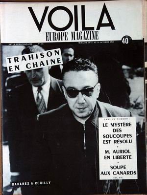

Le n° 505 de Voilà Europe Magazine paraît ce jour-là, titrant : Le mystère des soucoupes est
résolu

Dans le secteur de Mirande (Gers), Raymond Baron (19 ans,
cultivateur à Valentées), revient en vélomoteur d'une fête à Saint Médard. Soudain, à la
hauteur de "La Tournée d'Idrac", à 500 m du sommet des Agrolles, il aperçoit une lumière étrange. Parvenu au niveau
du point où le phénomène se situe, il ne voit plus rien. Mais, en levant les yeux, il remarque dans le ciel un globe
ovale d'aspect rougeâtre entouré d'une couronne bleue qui paraît se diriger vers Mirande sans faire le moindre
bruit Sud-Ouest de Bordeaux, p. 12, 21 octobre 1954 < Sider, J.: Le dossier 1954 et l'imposture rationaliste, Ramuel éditeur, 1997, pp. 111-112.
M. Mozin, tout en se rendant à Reims pour assister à un
match de football avec son ami M. Houssière, s'arrête à l'endroit où il a vu l'objet la
veille pour vérifier s'il y a des traces, espérant prouver à son ami qu'il n'a pas rêvé. Dans un espace étroit entre
un fossé de 1 m de large et 50 cm de profondeur et la route, 3 empreintes en demi-cercle et profondes de 8 à 10 cm
sont visibles avec au centre du cercle imaginaire d'environ 1,40 m formé par ces 3 empreintes, un rond carbonisé de
20 cm de diamètre dégageant une odeur que le témoin a rapproché de celle du benzène. La voiture a dû nécessairement
passer à entre 3 et 5 m de l'objet.
A Saint-Cyr-sur-Mer (France), Leon B., conseiller
municipal, voit un engin circulaire, de couleur orange, s'élever du sol Quincy.
A Cabasson (France), un homme (65 ans) chasse, accompagné
de son chien, près du confluent de la Durance et du canal de Brillance, voit sur le sol à 40 m de lui, un ojet gris
d'environ 4 m de long et 1 m de haut, surmonté d'un dôme d'ou sortent 2 silhouettes casquées. Le témoin s'enfuit,
son chien court vers l'objet mais bat bientôt en retraite, marchant difficilement, comme partiellement paralysé.
A à Mar-Vivo (La Seyne/Mer, près de Toulon), un habitant observe une "soucoupe"
pendant avant de la voir se diriger vers Bandol Seray,
Patrice: "Vague 1954 - L'affaire toulonnaise ou un cas sidérant...", CNEGU, décembre 2004..
A Varigney (France), plusieurs témoins, dont M. Beuclair (policier), voient 1 objet brillant, rouge vif, demi-sphérique par-dessus,
descendre au sol à 20 m d'eux. Des lumières rouges et blanches étaient visibles sous l'appareil.